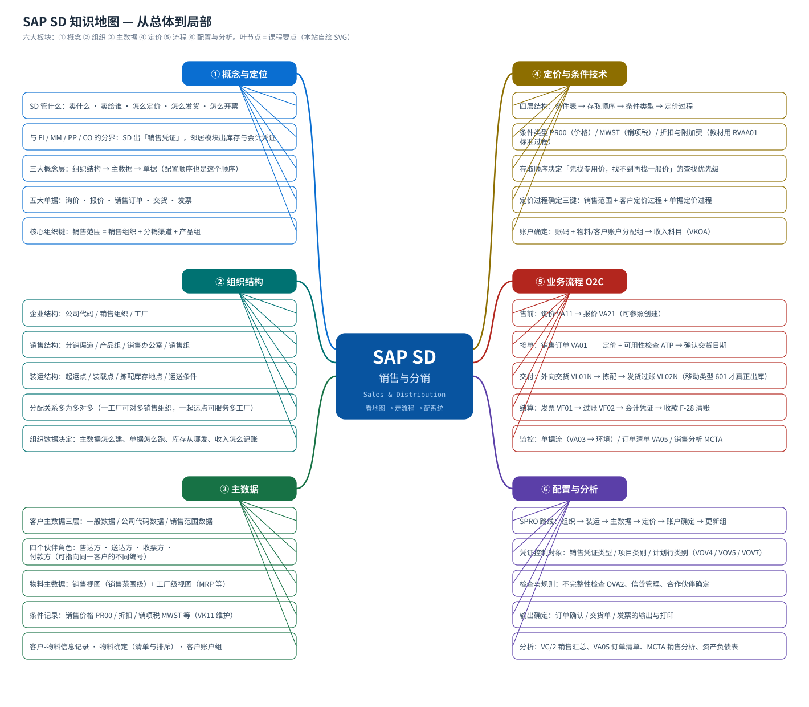

SAP SD 培训课程 · 销售与分销（Sales and Distribution）
从一个问题开始：东西怎么卖出去，钱怎么收回来
这门课按「概念 → 组织结构 → 主数据 → 定价 → 端到端流程 → 配置」的顺序讲，先给全貌（思维导图 + 结构图 + 流程图），再逐段拆到可以照着点鼠标的粒度。每个环节都配真实的 SAP GUI 系统截图（中文界面，取自本课程教材文档的原机画面）。
16页从概念到配置的完整课程
48个配置任务SPRO 里实际要做的后台设置
155张真实截图SAP GUI 中文界面原机画面
10张自绘图流程图 / 结构图 / 思维导图
1. 课程地图（思维导图）
先看这张图：SD 的全部知识就这六个板块。把这张图看懂，后面每一页都只是它的放大。建议第一遍不要背细节，只要记住「哪个问题归哪个板块」。
{kind=link}

2. 学习路线（从总体到局部）
- 先建立整体印象 — SD 管什么、和财务/物料/生产怎么分工、五大单据长什么样。看完应该能回答：「一个订单为什么能自动算出价格和交货日期？」
- 再看组织结构 — 公司代码 / 销售组织 / 分销渠道 / 产品组 / 销售范围 / 工厂 / 起运点。这是所有数据的「坐标」。
- 再看主数据 — 客户主数据（含四个伙伴角色）、物料主数据的销售视图、条件记录。数据没建好，单据一定跑不动。
- 再看定价 — 条件表 → 存取顺序 → 条件类型 → 定价过程 → 定价过程确定。价格问题的标准答案都在这里。
- 然后走一遍流程 — 端到端流程图 + 单据流：询价 → 报价 → 订单 → 交货 → 发货过账 → 发票 → 会计凭证 → 收款。
- 再拆到每一步 — 三个环节各一页：订单（order）、交货（delivery）、开票（billing），每页都有真实画面与逐步操作。
- 配置与实训 — 48 个后台配置任务（按 SPRO 顺序分组）与对应的真实画面；然后拿实训任务自己跑一遍。
- 自测与术语 — 30 题自评（合格 75%）；术语表随时查中英对照与 T-code。
3. 六大板块
① 概念与定位
SD 在 ERP 里的位置、三大概念层、五大单据、常见误解。
② 组织结构
企业结构 / 销售结构 / 装运结构，以及它们之间的分配关系。
③ 主数据
客户主数据三层与四个伙伴角色、物料销售视图、条件记录。
④ 定价与条件技术
条件表、存取顺序、条件类型、定价过程、账户确定。
⑤ 业务流程 O2C
订单 → 交货 → 发货 → 开票 → 收款的端到端流程与单据流。
⑥ 配置与分析
SPRO 配置路线（48 任务）＋ 报表与分析。
4. 不同角色的学习路线
| 角色 | 建议路线 | 重点 | |
|---|---|---|---|
| 销售 / 关键用户 | 模拟订单 | 概念 → 流程 → 订单 → 交货 → 开票 → 分析 | 会看单据流、会处理「没有库存 / 开不了票 / 价格不对」 |
| SD 顾问 | 全课 | 概念 → 组织 → 主数据 → 定价 → 配置 → 实训 | 能把「业务现象」翻译成「后台哪个配置」 |
| 财务 / 成本 | 中间三页 | 概念 → 流程 → 开票 → 定价 | 收入科目怎么来的（账户确定）、发票过账生成什么会计凭证 |
| 开发 / 接口 | 看数据 | 主数据 → 定价 → 流程 → 术语 | 单据表与字段：VBAK / VBAP / LIPS / VBRK、条件表 KONV、定价过程 |
5. 怎么用这套材料
每页的读法
- 先看本页顶部的「自绘图」——它是这一页的骨架
- 再看真实截图：每张图下面标了它来自教材哪个任务、原文件名是什么，可以回 Word 原稿核对
- 点图片可放大到 4×（投影用）；ESC 关闭
- 最后一节通常是「怎么看自己系统里对不对」
关于截图的诚实说明
真实截图：页面里标「画面 N」的图片是从教材文档 S4.docx 中提取的真实 SAP GUI 画面（中文界面），不是重绘的示意图。原文件名保留在每张图的说明行里。
自绘图：标「流程图 / 结构图 / 思维导图」的图是本课程自绘的 SVG，用来讲清结构和顺序；图上的数值是课程场景值，请以自己系统的画面为准。
标准值与版本差异课程里给出的订单类型 OR、项目类别 TAN、定价过程 RVAA01、条件类型 PR00 / MWST 等，含义在全版本通用，但具体编码和字段是否可改，随版本与行业方案而异。凡是可能因系统而异的点，页面都会给出「在自系统里怎么确认」（F1 帮助 / F4 取值表 / IMG 路径）。